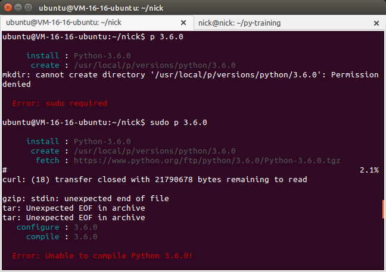
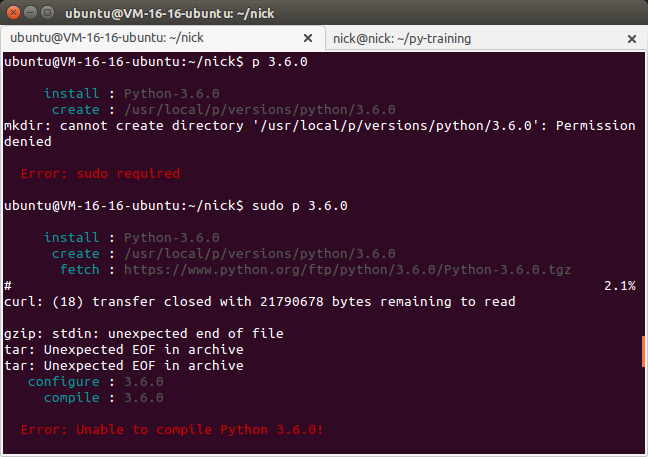

p是一个简单的python版本管理工具。
原理和用法 参考文档
安装
1 | wget https://github.com/qw3rtman/p/releases/download/v0.1.0/p |
使用
1 | Usage: p [COMMAND] [args] |
实际应用,感觉不是很好用

莫等闲 白了少年头 空悲切
p是一个简单的python版本管理工具。
原理和用法 参考文档
1 | wget https://github.com/qw3rtman/p/releases/download/v0.1.0/p |
1 | Usage: p [COMMAND] [args] |
实际应用,感觉不是很好用
